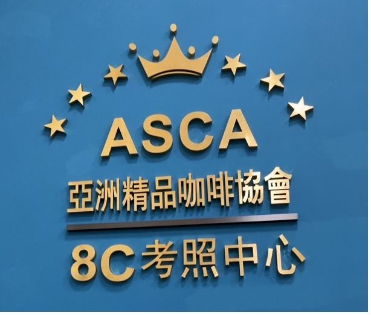
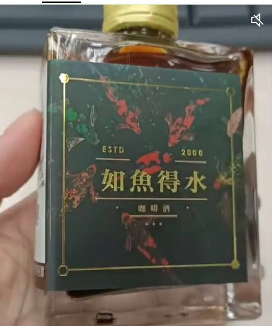
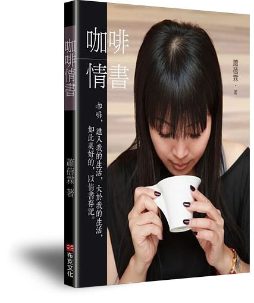

03 ・ MILESTONES
個人事蹟時間軸
從洛杉磯的一杯咖啡，到把每一次挫折變成「有機肥」的人生旅程。
「別人負面的祝福，我要把它變成有機肥來灌溉自己。」
── 人間福報〈台灣之光 蕭蓓霖奪3金〉2015
現職、學歷、經歷與榮譽，皆附原始出處，點「出處」可查證。
2009–2017 各項：《咖啡情書》作者簡介
從一杯手沖咖啡出發，延伸到 AI 科技、證照培訓、文創與創業輔導。
把二十多年的烘豆參數與創辦人的手感技術輸入 AI，成立 AI 烘豆實驗中心、推出 AI 智能手感手沖咖啡機與 AI 行動咖啡吧。

「開車需要駕照才安全」──推動咖啡專業證照，設 SCA 亞洲精品咖啡協會考照中心，與修平科技大學開辦產學合作證照班。

以澎湖仙人掌酒為基底、結合金牌豆曼特寧，創出台灣專利第一支「鹼性咖啡酒」；並推出白巧克力咖啡豆、咖啡麵、咖啡面膜。

2018 年出版《咖啡情書》（布克文化），以詩般文字沖泡人生酸甜苦辣，上架三個月熱賣近 6000 本；常受邀演講分享生命故事。
從洛杉磯的一杯咖啡，到把每一次挫折變成「有機肥」的人生旅程。
協會、待用咖啡、免費講座、長者關懷與捐贈──每一項都附出處。
依類別篩選，點卡片即開啟原文（另開新分頁）。
點照片可放大瀏覽，左右鍵或滑動切換。照片來源為 8C 咖啡官網與各媒體報導。